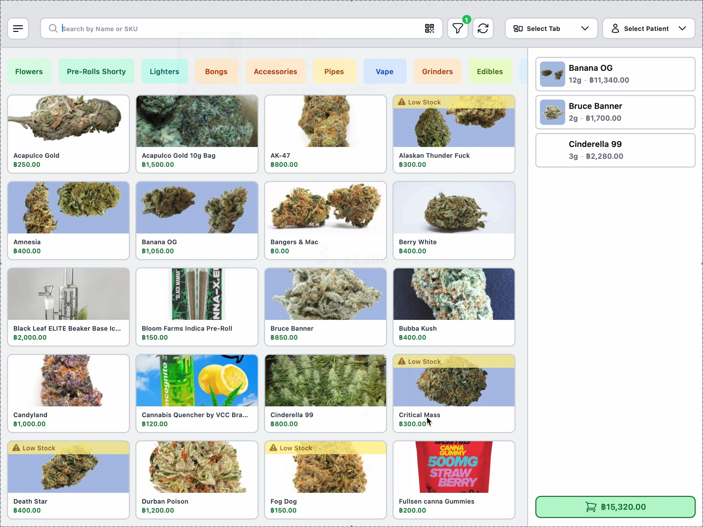
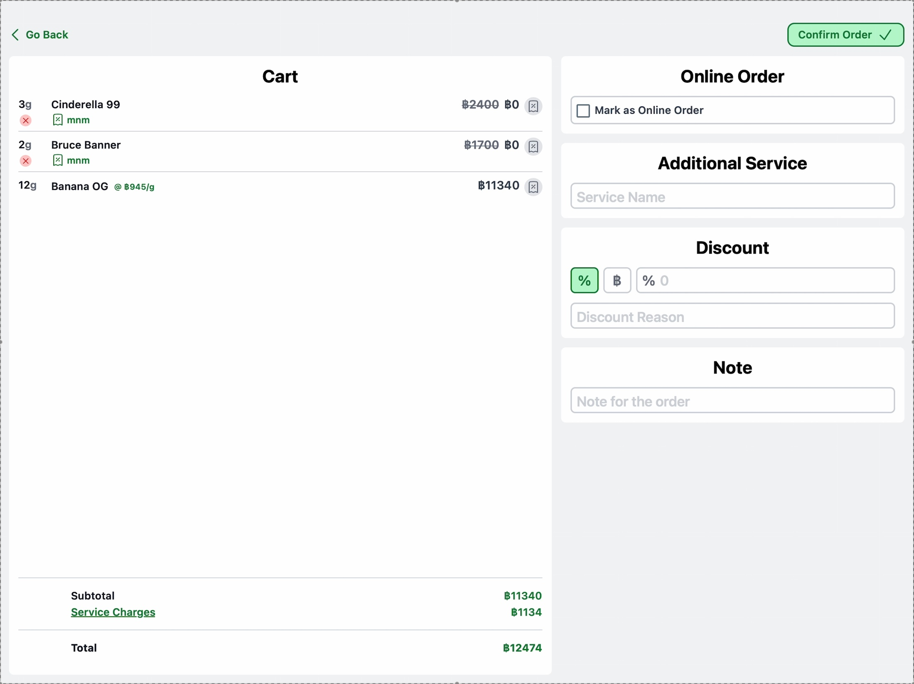
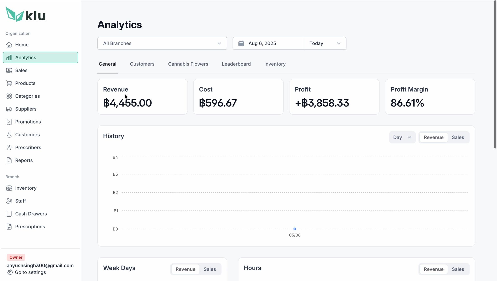
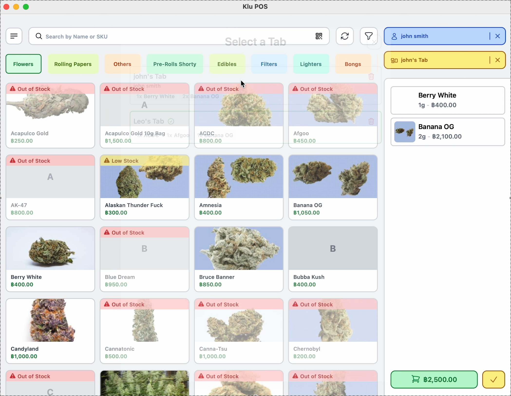
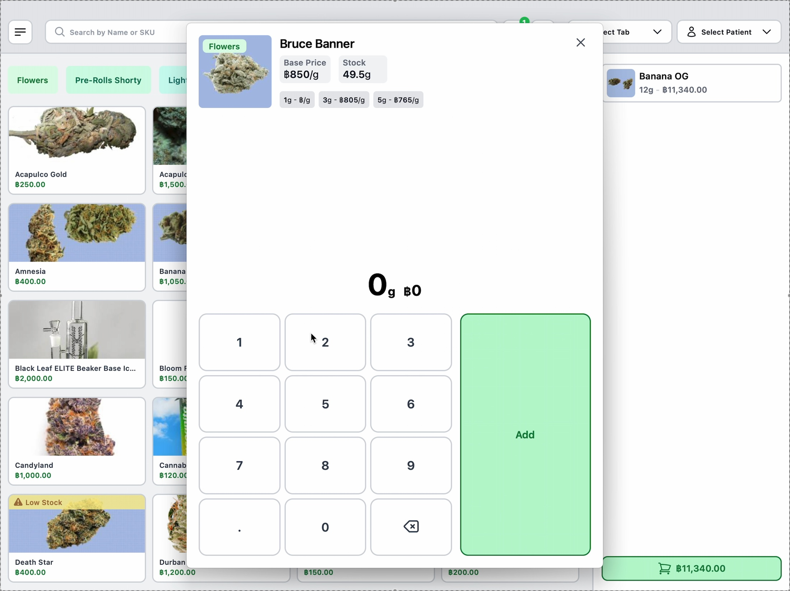
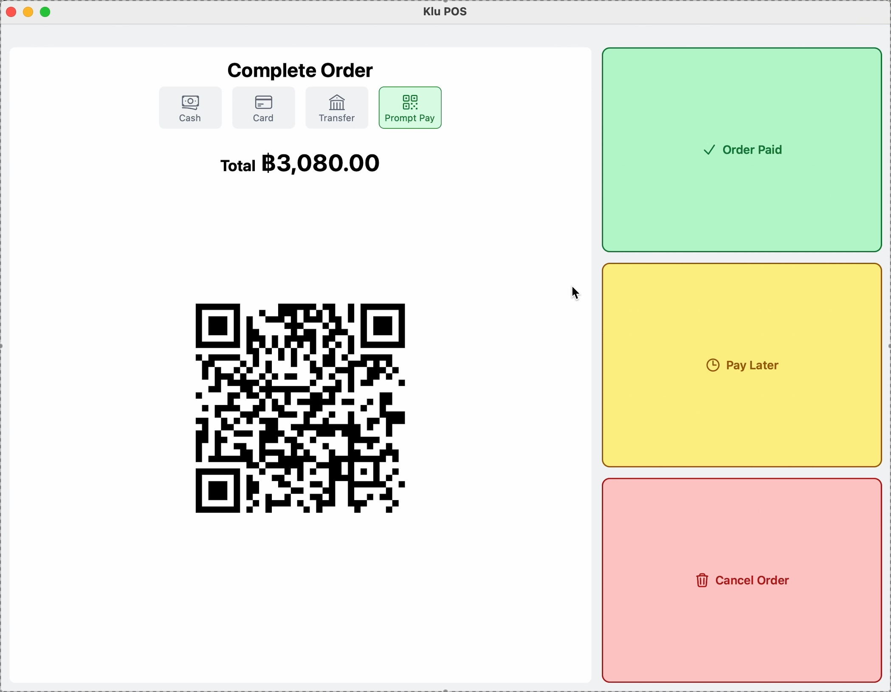
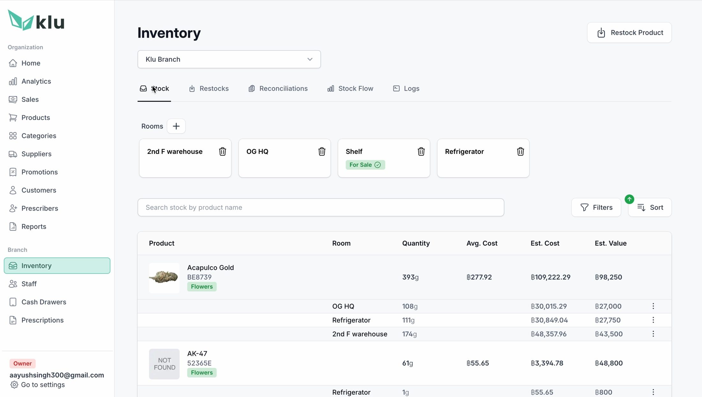

apps toggled to finish one sale
Product · UX · Engineering / Thailand, 2024
POS built for buds,
not burgers.
How four people built a cannabis point-of-sale system from first principles—in a market where everyone else was duct-taping restaurant software and hoping the regulator wouldn't notice.

01 / Where it starts
Someone handed a dispensary a burger app and said, “it's software, isn't it?”
Cannabis dispensaries across Thailand were running their businesses on restaurant POS systems with a “cannabis module” bolted to the side.
The problem was not that the software looked dated. It was that it misunderstood the business. It thought grams were menu items, consultations were table orders, and compliance was optional. The biggest global platforms would not serve the category at all, leaving operators to improvise around tools that were never designed for them.
We thought there was a better way. So we built KLu.
“We're supposed to be cannabis experts. Half our day is fighting a system that thinks we're selling pasta.”
were the official workaround documentation
precision, calculated on a phone beside the POS
customers watched staff fight the tool
02 / The shape of it
Two products. Two people. Two contexts.
KLu is not one app pretending to serve everyone. It is two connected products, each designed around the person standing in front of it.
01 / CounterNative iPad POS
Fast · tactile · offline
02 / AnywhereOperations PWA
Reports · inventory · control
The principle underneath
Don't force complex management onto a touch sales screen. Don't make a budtender learn a spreadsheet.
03 / Product decisions
Five choices that separated KLu from a burger app in a lab coat.
01
Recognition beats recall.
Strain names are chaotic and easy to mishear. A keyboard-first search flow asks a new budtender to memorize a cannabis encyclopedia. We made the product image, live stock state, price, and category visible together, so the shelf could be scanned instead of recalled.
≈45 sec → under 5 sec selection
02
Tabs, because a dispensary isn't a diner.
A consultation does not obey a tidy queue. One customer is choosing flower, another wants an edible, and a third steps outside to take a call. Independent tabs preserve each session through interruptions and network drops, then return the budtender to exactly where the conversation paused.
Parallel service · no abandoned carts
03
Weight is a first-class citizen.
Every cannabis sale is a weight transaction—not a unit count. KLu gives it the clearest interaction on the screen: a thumb-friendly numpad, common-weight presets, real-time inventory deduction, and a hardware bridge that can accept weight directly from a digital scale.
0.01g precision · direct scale input
Decision 04 / Quiet infrastructure
“Compliance should feel like plumbing: essential, invisible, and never broken.”
- Purchase-limit validation during the sale
- Seed-to-sale traceability in the background
- Government reporting on every transaction
- A complete, reviewable audit trail
Decision 05 / Local by default
PromptPay, because Thailand.
Customers already reach for their phone and scan. KLu generates the QR inside checkout and confirms the payment in the same transaction. It is a small interaction with a large message: the product was built for this market, not merely translated into it.
Native payment rail · automatic confirmation
04 / Under the hood
The right tool for each job, all the way down.
The architecture follows the product philosophy: optimize each surface for its real context, then let the difficult parts sync quietly underneath.
Native iOS protects touch performance and offline resilience at the counter. A React PWA gives owners access anywhere. A custom bridge speaks to digital scales. Critical actions never wait for the shop Wi-Fi to cooperate.
Touch-first sales, local state, resilient transactions.
Queues writes offline and reconciles when the network returns.
Inventory, reports, staff, branches and oversight.
↳ Hardware · digital scale bridge
↳ Compliance · validation + audit trail
↳ Payments · cash + card + PromptPay
05 / Outcome
The honest test: would people choose it again?
Every dispensary that piloted KLu kept it.
That last metric is the one we are quietly proudest of. When software understands the job, adoption stops being a sales problem and starts feeling inevitable.

06 / What travels
Four principles that generalize beyond weed.
Purpose-built beats adapted
When operational complexity exceeds normal retail, a ground-up model wins over a retrofit.
Make hard things invisible
Compliance, sync and hardware belong in infrastructure—not in the user's way.
Design for the actual body
Real work is parallel, interrupted and human. Design for the rush, not the demo.
Localize below language
Payment habits and local regulation create fit long before translated labels do.
The industry did not need another POS. It needed someone to understand the job before writing the software.